MODULE 11: ENTROPY
(fragments of the CD that comes with Cengel&Boles's book "Thermodynamics", 3-d edition, McGraw-Hill, 1998)
Class notes (start)
Entropy: A Measure of Disorder
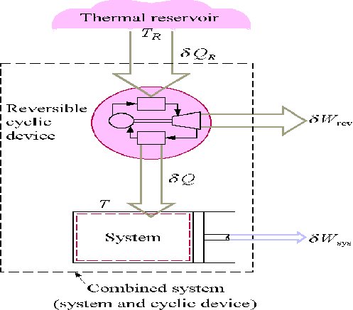
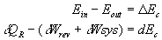
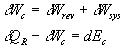
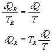
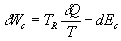
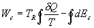
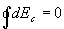
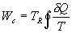
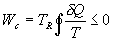
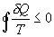
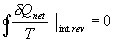
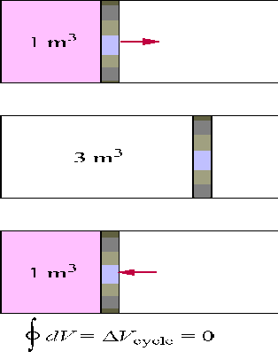
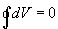
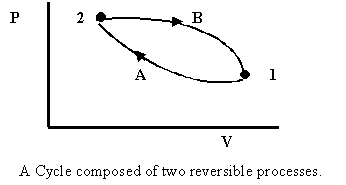
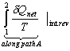
and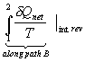
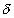
Qnet/T)int rev is independent of the path and must be a property, we call this property the entropy, S.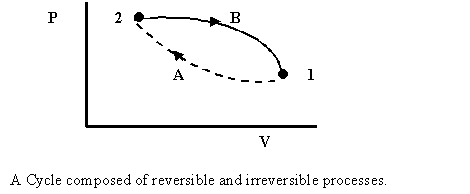
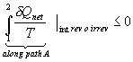
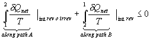
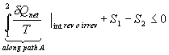
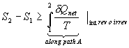
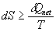
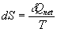
.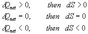
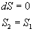
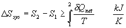
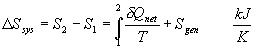
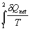
is performed by applying the first law to the process to obtain the heat transfer as a function of the temperature. The integration is not easy to perform, in general.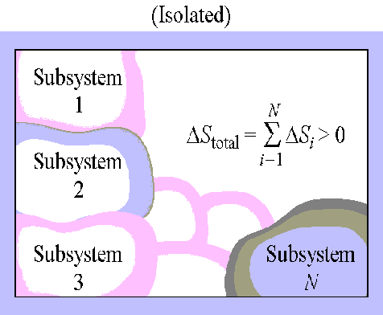
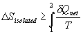
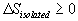
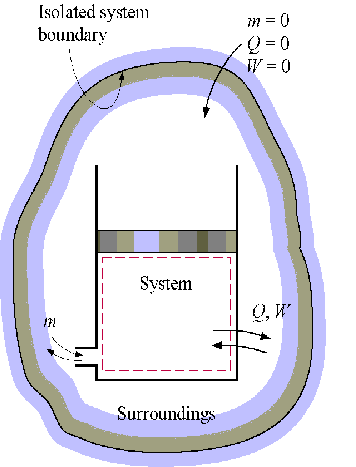
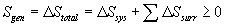
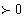
- irreversible processes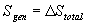
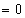
- reversible processes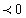
- impossible processes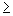
0.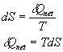
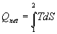
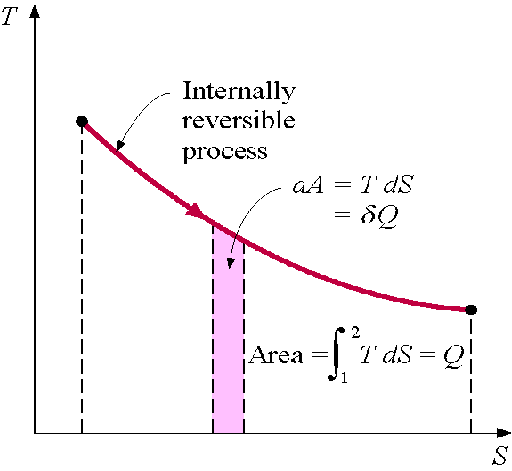
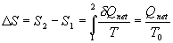
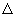
T > 0, as shown below.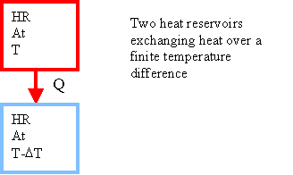
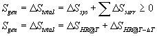
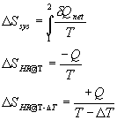
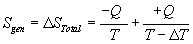
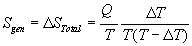